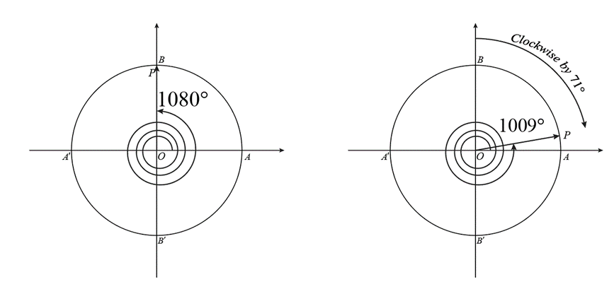

Measurement of Angles
What is an angle?
Consider two diverging rays, OA and OB, which originate from a common point, known as the vertex O. These rays extend indefinitely in their respective directions. The angle between OA and OB angle is the measure of amount of rotation that you must apply to one of the ray, without leaving the original plane, so that it overlaps with the other ray.
So how do we measure angles? How can numbers be connected to the "amount of rotation"? One simple yet powerful way of measuring angles was probably introduced by Babylonians about 4000 years ago. This method of measuring angles we are made familiar with in primary classes. To measure the angle between two rays, we can draw a circle, of any radius, with center at O. This circle intersects the rays at points A and B. Now let us cut the circle into 360 equal parts, beginning with a cut at point A, by drawing radial lines emanating from the center O. These radial lines are dividing the circle into 360 equal parts and thus any two consecutive radial lines have the same inclination or angle between them, which we call as "1 degree" and denote as 1°. Thus, a complete circle has a total of 360 degrees.
 Why did Babylonians divide the circle into 360 equal parts? Why not 100 or 500 or 100 parts? There are many theories. One theory suggests that 360 is very close to the number of days in a year. Another theory says that they used an angle between the sides of an equilateral triangle as the fundamental angle and divided that angle into 60 equal parts (because Babylonians used a sexagesimal system i.e., their numeral system had a base of 60). Yet another theory suggests that 360 has many factors, 24 to be exact.
Why did Babylonians divide the circle into 360 equal parts? Why not 100 or 500 or 100 parts? There are many theories. One theory suggests that 360 is very close to the number of days in a year. Another theory says that they used an angle between the sides of an equilateral triangle as the fundamental angle and divided that angle into 60 equal parts (because Babylonians used a sexagesimal system i.e., their numeral system had a base of 60). Yet another theory suggests that 360 has many factors, 24 to be exact.
Info
The Babylonians divided the circle into 360 equal parts for several reasons, which are rooted in both their astronomical observations and their numerical system:
-
Astronomy: The Babylonians were skilled astronomers and noted that the Earth took approximately 360 days to complete its orbit around the Sun. Dividing the circle into 360 parts created a convenient correlation between the daily progression of the Earth and the angular measurement system.
-
Numerical System: The Babylonians used a sexagesimal (base-60) numerical system. The number 60, and by extension 360, has a large number of divisors, making calculations more practical and flexible. In a sexagesimal system, 360 is 6 x 60, which fits neatly into their numerical framework.
-
Geometry: When working with geometry, particularly in the construction and measurement of angles and segments, having a circle divided into a number divisible by a large number of factors simplifies the process. The number 360 has 24 divisors, making it versatile for constructing various geometric shapes and for practical applications like land division.
These reasons combined made 360 an attractive number for the division of the circle, and this convention has persisted throughout history due to its practicality and the legacy of Babylonian mathematics.
Sexagesimal System
To measure the angle between OA and OB, we now calculate how many parts lie between OA and OB. This count may not be a whole number if OB lies between two radial lines. We choose the whole part as the angle and neglect the partial part. Counting of parts can be easily done if we mark the point A as zero and calibrate in the anticlockwise direction the rest of the intersection points of radial lines with the circle. Suppose B lies between 35 and 36, then the angle between OA and OB is 35 degrees. We have some error in this measurement because of that neglected partial degree.
{kind=link}
To minimize this error, we divide each degree into 60 equal parts and calibrate accordingly. Each part is called a minute. Thus, one degree is equal to 60 minutes. The minute is denoted by the prime symbol (′). Now we can measure the angle with more accuracy. If the ray OB lies between 23 and 24 minutes, we measure this as 23′ only. Thus the angle is 35°23′.
{kind=link}
Summary
For further accuracy, 1′ is divided into 60 parts. Each part is called a second. Thus, 1′ is equal to 60″ (seconds is denoted by double prime). In the above figure, the ray OB lies between 8″ and 9″. Thus the angle is 35°23′8″.
So, this system divides a circle into 360 degrees, each degree into 60 minutes, and each minute into 60 seconds. Here's a more detailed look at how it works:
-
Degrees: The full circle is divided into 360 equal parts, each part being one degree (denoted as 1°).
-
Minutes: Each degree is further subdivided into 60 equal parts, each called a minute of arc (denoted as 1').
-
Seconds: For even finer measurements, each minute of arc is divided into 60 equal parts, known as seconds of arc (denoted as 1"). This level of granularity is used in specialized fields that require extreme precision, like celestial navigation and certain aspects of geodesy.
The sexagesimal system for angle measurement remains in widespread use today and is the standard system for expressing angles in many technical fields.
DMS vs DD
In Geographical Information Systems or Geographical Positioning Systems, to pinpoint the location of an object on the Earth, a coordinate system is used which you might be a little familiar with as latitude and longitude system.
Latitude measures in degrees the North-South location of a point with respect to the Equator on Earth’s surface. A point on the Equator has latitude 0° and a point on the pole has the latitude 90°. A point anywhere else on the surface has the latitude equal to the angle measured between the ray joining the center of Earth to the point and the plane passing through the Equator.
On the other hand, longitude is the measure of location of a point in East-West direction with respect to an imaginary line on the surface of the Earth joining both the poles and Greenwich, London. This line is called the Prime Meridian. Any point on it has longitude 0°. To measure the longitude of any other point P on the surface of the Earth, we draw another line passing through the point and the poles. Suppose this line and the prime meridian intersect the Equator at A and B and the Earth's center is O. Then the angle between OA and OB is the longitude of point P.
Latitudes and Longitudes are measured either in Degree/Minutes/Seconds (DMS) or Decimal Degrees (DD) System.
In the DMS system, which we just learned above, the accuracy is only up to 1". In DMS we cannot measure below 1". This is an error of around 31 meters on the surface of the Earth. In this system, if there are two points at a distance less than 31 m, their latitudes and longitudes will be the same in this system.
To achieve more accuracy, we use decimals and thus the name decimal degrees. Instead of using minutes and seconds, we use decimal fractions to any degree of accuracy. With just 5 decimal places we can acquire an accuracy of 1 m on the Earth’s surface. In decimal degrees, each degree is divided into 10 parts. Each part is again divided into 10 more parts and this process is continued to any level of accuracy. Clearly, θ = 32.234° represents an angle that lies between 32° and 33°. If we divide the degree between 32° and 33° into 10 parts, then θ lies between 2 and 3 (3rd part) i.e. 32.2° and 32.3°. If each of these parts is divided into 10 parts, then θ lies between 3 and 4 (4th part) i.e. 32.23° and 32.24°. θ = 32.234° indicates that θ lies between 4 and 5 (5th part) i.e. 32.234° and 32.235°. This is the meaning of 32.234°.
DMS  DD
DD
It's quite easy to convert DMS to DD.
Suppose you are given an angle in decimal degrees, say, \( x.y° \) (\( x \) is the integer part and \( .y \) is the decimal part)
-
Multiply \( 0.y \) with 60, you will get the number of minutes, probably in decimal form, say, \( m.z' \) (\( m \) is the integer part and \( .z \) is the decimal part). If \( z = 0 \), we are done. The answer is \( x°\ m' \). If \( z \neq 0 \), proceed to step 2.
-
Multiply \( 0.z \) with 60, now you will get the number of seconds, say \( s.r'' \) (\( s \) is the integer part and \( .r \) is the decimal part). Therefore we get \( x.y° = x°\ m'\ s.r'' \). The number of seconds is in decimal form. We round off this number and we get the DMS form.
Example 1
Convert 35°24'36'' to decimal degrees.
Solution:
35°24'36'' = \( 35 + \frac{24}{60} + \frac{36}{60 \times 60} \) = 35.41°
Example 2
Convert 35.4124° to DMS.
Solution:
- Multiply 0.4124 with 60, we get, 24.744'
- Multiply 0.744' with 60, we get, 44.64''
- 35.4124° = 35° 24' 44.64''
- Rounding off, we get, 35.4124° = 35° 24' 45''
Types of Angles
Angles are classified based on their measure. Here are the main types of angles:
-
Acute Angle: An angle less than 90 degrees but greater than 0 degrees.
-
Right Angle: An angle that is exactly 90 degrees.
-
Obtuse Angle: An angle greater than 90 degrees but less than 180 degrees.
-
Straight Angle: An angle that is exactly 180 degrees, appearing as a straight line.
-
Reflex Angle: An angle greater than 180 degrees but less than 360 degrees.
-
Complete Angle or Full Rotation: An angle that is exactly 360 degrees.
{kind=link}
Additionally, there are some other specific types of angles based on their positions and measurements:
-
Complementary Angles: Two angles that add up to 90 degrees.
-
Supplementary Angles: Two angles that add up to 180 degrees.
-
Adjacent Angles: Two angles that share a common vertex and side but do not overlap.
-
Vertical Angles: Angles opposite each other when two lines cross. They are always equal.
-
Alternate Interior Angles: Angles that lie between two lines and on opposite sides of a transversal. They are equal when the lines are parallel.
-
Consecutive Interior Angles: Angles that lie on the same side of the transversal and inside the two lines. When the lines are parallel, these angles are supplementary.
-
Corresponding Angles: Angles that are in the same position at each intersection where a straight line crosses two others. They are equal when the lines are parallel.
Now in geometrical contexts, an angle of 390° does not make sense. But in trigonometry defining such an angle is of great utility.
So how do we define angles greater than 360°?
We define such angles using the concept of rotation. Let us draw a circle of some radius in the cartesian coordinate system, its centre being at origin O. The circle cuts the positive x-axis, positive y-axis, negative x-axis and negative y-axis at A, B, A' and B' respectively. We call OA as the reference line. The direction of positive x-axis is the reference direction. Suppose there is some variable point P on the circle. There is a ray joining O to P. Initially suppose P is at A. Let us assume that the angle between OA and OP is 0°. Now P starts moving and reaches another location. The angle between OA and OP has changed. If the new angle is θ, we say, P has covered an angle θ on the circle. P is said to be the terminal point of angle θ. We follow the following rules to write down the value of θ:
Rule 1: \( \theta \) is measured from the positive x-axis.
Rule 2: If point P moves anticlockwise, the angle \( \theta \) increases by the amount of angle it moved and if it moves clockwise, the angle \( \theta \) decreases by the amount of angle it moved.
{kind=link}
Consider the following example to clearly understand the dynamics of measuring angles in this way:
Suppose P is at A, the angle now is 0°. Now it starts moving anticlockwise and reaches B. The amount of angle it moved is 90°. Thus angle \( \theta = 0° + 90° = 90° \). After reaching B, the point starts moving clockwise and eventually reaches B'. The amount of angle moved is 180°. What is the value of angle \( \theta \)? \( \theta \) will decrease by the amount the point P moved, i.e., Now \( \theta = 90° - 180° = -90° \).
{kind=link}
Consider the following sequence of operations to make it more clear.
-
Suppose \( \theta = 60^\circ \) initially. If the terminal point P rotates by an angle \( 30^\circ \) anticlockwise, the new value of \( \theta \) is \( \text{old value} + 30^\circ = 60^\circ + 30^\circ = 90^\circ \)
-
Suppose \( \theta = 60^\circ \) initially. If the terminal point \( P \) rotates by an angle \( 30^\circ \) clockwise, the new value of \( \theta \) is \( \text{old value} - 30^\circ = 60^\circ - 30^\circ = 30^\circ \).
-
When \( \theta = 0^\circ \), the point \( P \) is at \( A \), it starts moving in the anticlockwise direction, it reaches \( B \), \( \theta \) becomes \( 90^\circ \). It keeps on moving anticlockwise, \( \theta \) keeps on increasing. It reaches \( A' \), the angle \( \theta \) becomes \( 180^\circ \). Then it reaches \( B' \) and the angle becomes \( 270^\circ \) (3 right angles are covered). Then it reaches \( A \), the angle covered is \( 360^\circ \). One complete revolution is done. If it continues moving after this point onwards, \( \theta \) keeps on increasing and it again reaches \( B \) and the angle \( \theta \) is \( 360^\circ + 90^\circ = 450^\circ \) now. This way if it keeps on moving anticlockwise, the angle \( \theta \) keeps on increasing.
-
Again let the point \( P \) be at \( A \) and \( \theta \) be \( 0^\circ \). Suppose \( P \) begins moving clockwise and reaches \( B' \), the angle \( \theta \) decreases by \( 90^\circ \) i.e. \( \theta = 0^\circ - 90^\circ = -90^\circ \). Suppose \( P \) keeps on moving clockwise and reaches \( A' \), \( \theta \) becomes \( -180^\circ \). When \( \theta \) reaches \( B \), the angle is \( -270^\circ \) and so on.
-
Let us plot some angles:
a. 1009°
Since, 1009° = 1080° - 71°, which we can interpret as an anticlockwise rotation of 1080° and then a clockwise rotation of 71°. Also, 1080° = 3×360° which is not coincidental. We had chosen 1080° in such a way that it is the closest multiple of 360° to the given angle 1009°. In this way it is easier to plot the angle. For we can now just say that 1009° can be obtained by 3 anticlockwise full revolutions and then move clockwise by 71°. b. -596°
Since, -596° = -720° + 124° = -2×360° + 124°, we can interpret this angle as: Take 2 revolutions clockwise and then move anticlockwise by 124°. You may have some other interpretation. For example, -596° = -7×90° + 34°. This can be interpreted as: Move 7 right angles clockwise and then move 34° anticlockwise.
{kind=link}
{kind=link}
{kind=link}
{kind=link}
Incorporating time measurement in Angles
The motivation of measuring angles this way comes from Physics. Measuring angles by the concept of rotation introduces a temporal aspect, akin to the passage of time, though it is not a direct measure of time itself. When we say an angle is 720 degrees, we imply that a point or a ray has completed two full rotations, or cycles, around a circle. This is similar to a clock hand making two complete cycles around the clock face, which represents the passage of 12 hours.
In this way, the measurement of angles in degrees, especially those greater than 360 degrees, can be thought of as analogous to counting laps or revolutions. Each 360-degree increment represents one full cycle, and additional degrees represent progress into subsequent cycles. The concept of multiple cycles is essential in various applications, such as in phase angles in electrical engineering or in describing periodic motion in physics, where the progression through cycles over time is a fundamental aspect of the phenomena being described.
Coterminal Angles
We also observe one very important thing that if the terminal point is at some location such that the angle is \( \theta \), then for the same location the angle can also be \( 360^\circ + \theta \), \( 720^\circ + \theta \), ...or \( -360^\circ + \theta \) or \( -720^\circ + \theta \). That is the terminal point \( P \) can be at that location for infinite values of angles. All such angles are said to be coterminal.
{kind=link}
So, what are coterminal angles?
Angles having the same terminal point. They will play an important part in trigonometry, as we shall see later.
If \( \theta \) is some angle having the terminal point \( P \), then all angles of the form \( 360^\circ \times n + \theta \), where \( n \in \mathbb{Z} \), are also having the same terminal point \( P \). They are, thus, coterminal.